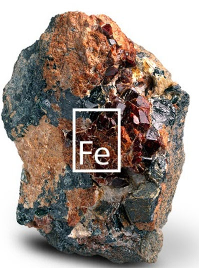
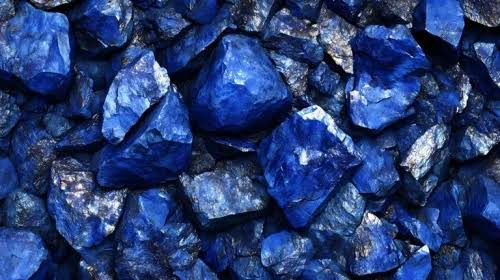
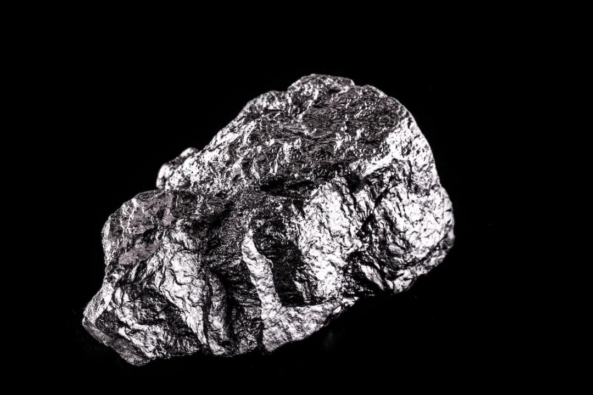
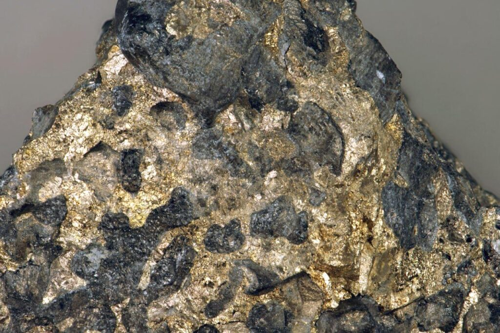
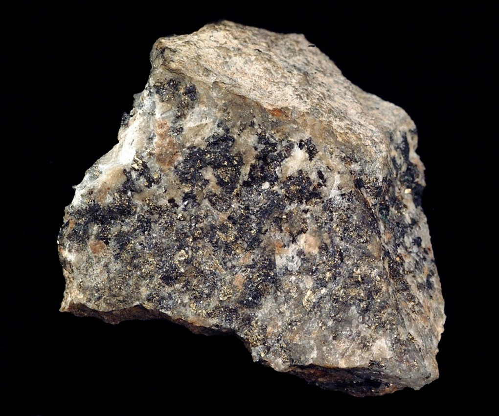
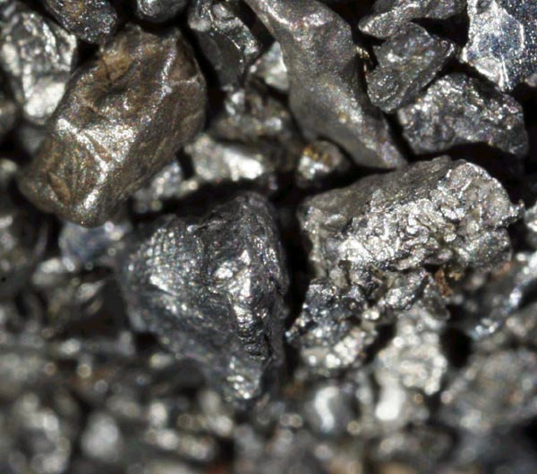

Ferro
Magnetita e hematita são minérios importantes de ferro.
Uma abordagem descritiva sobre as propriedades, características, compostos, aplicações e importância dos metais de transição do bloco d.
Os elementos do bloco d apresentam grande diversidade química e tecnológica.
Os metais de transição ocupam uma região central da tabela periódica e são caracterizados pelo preenchimento progressivo dos orbitais d. Essa configuração eletrônica contribui para uma grande variedade de propriedades químicas e físicas.
Entre suas características estão a possibilidade de apresentar diferentes estados de oxidação, formação de compostos de coordenação, atividade catalítica e, em muitos casos, a formação de compostos coloridos.
Neste trabalho são abordados seis elementos do bloco d: ferro (Fe), cobalto (Co), rutênio (Ru), ródio (Rh), ósmio (Os) e irídio (Ir). Esses elementos pertencem às séries de transição associadas aos grupos 8 e 9 da tabela periódica.
Fe, Co, Ru, Rh, Os e Ir possuem importância científica e tecnológica. Eles participam de processos catalíticos, produção de materiais, metalurgia, sistemas eletrônicos e diversas aplicações industriais.

Magnetita e hematita são minérios importantes de ferro.

A cobaltita é um dos minerais associados ao cobalto.

O rutênio costuma ocorrer associado a minérios de metais do grupo da platina.

O ródio é raro e geralmente é obtido como subproduto do processamento de minérios de platina e níquel.

O ósmio pode ocorrer associado a minerais do grupo da platina.

O irídio é raro e costuma ocorrer junto a outros metais do grupo da platina.
Uma demonstração de reações de precipitação e fenômenos osmóticos.
O jardim químico forma-se quando cristais de sais metálicos, como sais de ferro(II) ou cobalto(II), são colocados numa solução de silicato de sódio (Na₂SiO₃). A reação na superfície dos cristais produz membranas e precipitados de silicatos metálicos, que podem crescer em estruturas semelhantes a plantas.
O crescimento é influenciado pela diferença de concentração entre o interior e o exterior das membranas, pela osmose e pela entrada de solução. A aparência final depende dos sais utilizados e das condições do experimento.
Principais características dos seis metais estudados.
Os estados de oxidação +2 e +3 participam de sistemas de oxirredução e permitem a formação de complexos, como os íons hexacianoferrato. Biologicamente, o ferro integra a hemoglobina, responsável pelo transporte de oxigênio. Na indústria, é essencial à produção do aço a partir de minérios como a hematita.
A química do cobalto é importante para a Teoria do Campo Cristalino e para a química de coordenação, incluindo os complexos de cobalto(III) estudados por Alfred Werner. Na biologia, integra a vitamina B12 (cobalamina); na indústria, é usado em superligas resistentes a altas temperaturas.
O rutênio é um metal do grupo da platina cuja configuração eletrônica é frequentemente representada por [Kr] 4d⁷ 5s¹. É estudado em catálise homogênea, incluindo os catalisadores de Grubbs usados na metátese de olefinas, e em células solares sensibilizadas por corante (DSSC).
O ródio apresenta configuração eletrônica [Kr] 4d⁸ 5s¹. Entre suas aplicações está o catalisador de Wilkinson, [RhCl(PPh₃)₃], empregado na hidrogenação de alquenos, além do uso importante em conversores catalíticos automotivos.
O ósmio é um dos elementos de maior densidade, indicada aqui como 22,59 g/cm³. No tetróxido de ósmio (OsO₄), apresenta estado de oxidação +8; esse composto é um agente oxidante usado em reações como a di-hidroxilação de alcenos.
O irídio apresenta principalmente os estados de oxidação +3 e +4 e destaca-se pela resistência à corrosão. Historicamente, foi usado em uma liga associada ao protótipo internacional do quilograma. Na catálise, destaca-se também o complexo de Crabtree.
Comparação de propriedades físicas e químicas dos seis metais estudados.
| Elemento / Símbolo | Raio atômico (pm) | Eletronegatividade (Pauling) | Densidade (g/cm³) | Fusão / ebulição (°C) | Estados de oxidação e geometrias comuns |
|---|---|---|---|---|---|
| Ferro (Fe) | 126 | 1,83 | 7,87 | 1538 / 2862 | +2, +3 (octaédrica, tetraédrica) |
| Cobalto (Co) | 125 | 1,88 | 8,90 | 1495 / 2927 | +2, +3 (octaédrica, tetraédrica) |
| Rutênio (Ru) | 134 | 2,20 | 12,45 | 2334 / 4150 | +3, +4, +8 (octaédrica) |
| Ródio (Rh) | 134 | 2,28 | 12,41 | 1964 / 3695 | +1, +3 (quadrada plana, octaédrica) |
| Ósmio (Os) | 135 | 2,20 | 22,59 | 3033 / 5012 | +4, +8 (octaédrica, tetraédrica) |
| Irídio (Ir) | 136 | 2,20 | 22,56 | 2446 / 4428 | +3, +4 (octaédrica, quadrada plana) |
Propriedades que ajudam a compreender o comportamento dos metais de transição.
Os metais do bloco d podem apresentar mais de um estado de oxidação devido à proximidade energética entre os orbitais ns e (n−1)d.
Muitos íons de metais de transição formam compostos coloridos. As cores estão relacionadas às transições eletrônicas e à estrutura dos complexos.
Esses elementos podem se ligar a moléculas ou íons chamados ligantes, formando complexos de coordenação com diferentes geometrias.
Muitos metais de transição são excelentes catalisadores, pois podem interagir com reagentes e facilitar diferentes etapas de uma reação química.
A presença de elétrons desemparelhados nos orbitais d pode gerar propriedades paramagnéticas e outras características magnéticas.
A química dos metais de transição é fundamental para compreender compostos utilizados em catálise, materiais e processos biológicos.
Esses elementos possuem funções importantes em diferentes áreas.
O ferro é o metal mais usado no mundo, essencial para a fabricação de aço, estruturas de construção, veículos e ferramentas. Na biologia, ele é vital para formar a hemoglobina, que transporta oxigênio no sangue. Sua abundância e resistência sustentam a economia e a vida humana.
O rutênio (Ru) é um metal raro do grupo da platina. Ele é muito importante na alta tecnologia e na indústria porque aumenta a dureza, resiste à corrosão e atua como um forte catalisador em reações químicas.
O ródio (Rh) atua como um catalisador eficiente na indústria farmacêutica e química para acelerar reações de síntese assimétrica, permitindo a criação de ligações químicas precisas e moléculas específicas complexas usadas em medicamentos e insumos avançados.
O ósmio é o elemento natural mais denso do planeta, caracterizado por um tom branco-azulado, extrema dureza e alta resistência à corrosão. Ele é essencial em ligas de alta durabilidade para instrumentos de precisão, implantes médicos e como catalisador em reações químicas avançadas.
A importância do ósmio reside em suas propriedades físicas e químicas únicas, como suportar altas temperaturas e resistir a ácidos severos onde outros metais falham. Por ser um subproduto extremamente escasso da extração de platina, sua utilidade é altamente especializada e restrita a setores de ponta.
O irídio é um metal de transição extremamente denso, raro e o elemento mais resistente à corrosão conhecido, suportando altas temperaturas sem oxidar. Suas principais aplicações envolvem a fabricação de velas de ignição de alta durabilidade, cadinhos para laboratório e ligas metálicas especiais.
Teste seus conhecimentos sobre os metais do bloco d apresentados nesta página.
O estudo de Fe, Co, Ru, Rh, Os e Ir demonstra a diversidade química dos metais do bloco d. Embora pertençam à mesma região da tabela periódica, esses elementos apresentam diferenças importantes em abundância, propriedades físicas, estados de oxidação e aplicações.
O ferro e o cobalto possuem grande relevância industrial, enquanto rutênio, ródio, ósmio e irídio apresentam propriedades que os tornam particularmente importantes em aplicações especializadas e na química de metais preciosos.
Dessa forma, compreender a estrutura eletrônica e as propriedades dos metais de transição é essencial para entender seu comportamento químico e suas aplicações em ciência, tecnologia e indústria.
Fontes recomendadas para aprofundamento do conteúdo.